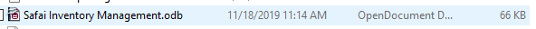
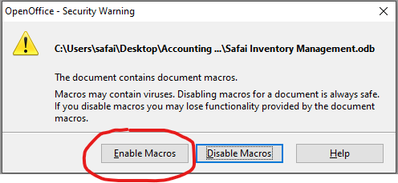
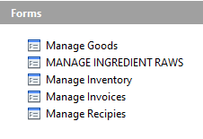
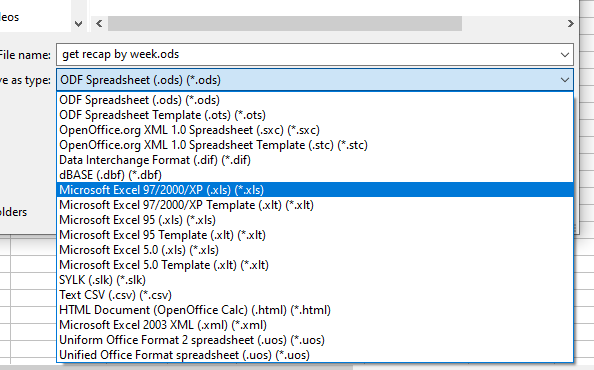

To open the database navigate to the OpenOffice Base file named "Safai Inventory Management.odb" and double click it (It is currently stored at: C:\Users\safai\Desktop\Accounting Packet\Safai Inventory Management Database)
When the database opens select "Enable Macros" from the pop-up dialog
Along the left of the Base interface under the Database header are four buttons which will allow you to view different aspects of the database. Of primary concern are the "Forms" and the "Tables".
Under "Forms" are the database forms which will be the most User-Friendly way for you to interact with the database.
The Manage Goods form will allow you to register goods from a supplier.
MANAGE INGREDIENT RAWS form is used to map a supplier invoice item (a "Good") to an "Ingredient" which can be used in a recipe (which can be defined using the Manage Recipies form).
Finally, Manage Invoices can be used to enter, view, and edit an invoice.
Under "Tables" are the various database tables which form the core of the database by containing and structuring all of it's data. You'll notice two different images by the various items listed here. The kind next to the red mark is an actual table whereas the kind indicated by the green mark are called views.
The only table you should ever need to edit directly is the SUPPLIERS table, which will be done when you need to register a new vendor or supplier with the database in order to track their goods and invoices.
You will notice that there are two dropdown boxes on the form for the Supplier. The first box determines which supplier is recorded in the database for this invoice whereas the secound box is used by the form to properly interpret item codes. If you click the arrows on the Invoice Navigation Panel to flip through a few invoices you will see that the first box changes while the other stays the same. This is because the first box is reflecting what is stored in the database, but the second will just display whichever supplier was last selected. You will also see that the Item Codes and Goods Names do not appear whenever the two Supplier dropdown boxes do not match. To see these on any given invoice change the second dropdown to match the first and then click Save Invoice Header to refresh the form. Never change the first Supplier dropdown unless you need to actually change which supplier this invoice is for.
The INVOICE ACCOUNTING DATE text box will determine which week and period this invoice is coded for. So if the invoice you are entering is actually dated within the week and period you are coding it for then simply enter that date here, otherwise enter a date within the range of the period and week you want the invoice coded for. This functionality exists for cases when an older invoice was misplaced and but now needs to be coded within the current week.
To enter a new invoice open the Manage Invoices form and click the New Invoice button. Select the Supplier Name from the first SUPPLIER dropdown box. (If the Supplier is not listed you will have to enter the supplier name into the SUPPLIERS Table as detailed in that section of the manual. Note that you will need to either close and reopen the form or select one of the invoice header fields and then click the Refresh Button located at the bottom of the form). Next enter the date listed on the invoice into the INVOICE DATE text box and the appropriate date into the INVOICE ACCOUNTING DATE. Now enter the invoice number listed on the invoice into the SUPPLIER INVOICE ID field; if the supplier did not provide an invoice number simply type the invoice date here as well. Next select the invoice type from the INVOICE TYPE dropdown. If it is a check please enter the check number in the CHECK NUMBER field. Next click the Save Invoice Header button and then select the supplier name from the second Supplier dropdown and click the Save Invoice Header button once more.
Now that the Invoice Header has been created and the supplier set for the form you can begin to enter the goods listed on the invoice. Enter the quantity and press the Enter key on your keyboard, the cursor will automatically move to Unit Price which you can now enter. Press the Enter key again and start typing in the Item Code for the current item, the form will begin to guess what code you are trying to enter. You can also click on the Item Code field or the Goods Name field to use the dropdown to select the good rather than typing, but for quick entry of invoices typing is recommended once you get a handle on using the form. When you select an Item Code or a Goods Name the other field will be automatically updated to match the entry you have selected. If the good/item code you are attempting to enter does not show up in the drop down then you will need to use the Manage Goods Form in order to register the good in the database. (After registering a new good you will need to click Save Invoice Header before it will show up in the dropdown). Continue to enter the rest of the items on the invoice in this same manner.
When you have finished entering the line items from the invoice click the Save Invoice Header button to see the calculated results for the invoice. Verify that the calculated Invoice Totals match the totals on the physical invoice. If they don't, check the quantities and unit prices you entered. You can also refer to the calculated Ext Price and Tax to help find the source of the mistake. If an item is not showing a tax but it should be you can fix this via the Manage Goods form
The Manage Goods Form is where goods from a particular supplier are defined. To view, enter or edit goods for a supplier select their name from the drop down and click the filter button. If a supplier does not appear in the dropdown box you will have to enter it into the SUPPLIERS Table as detailed in that section of the manual. Note that you will need to either close and reopen the form or select the supplier dropdown and then click the Refresh Button located at the bottom of the form.
To enter a new good, first enter its Item Code. This code must be unique amongst the Item Codes for this supplier. If an item with the same number has already been entered the form will prevent you from moving to a new line on the form.
The Tax Field is used to define any taxes which should be applied to this good. If a good is taxed it will almost always be Kentucky sales tax which is entered here as 0.06 (i.e. 6%). In most cases you should be able to determine if an item is taxed based on the invoice it is found on.
The Description field is less technical than the others but it should concisely identify what the good is, be easy to match up with the description used on the invoice itself, and start with the most descriptive word so that when searching through the items when sorted alphabetically this item will be easily found and identified.
The Unit Type should define how much of this good is considered a single unit by the supplier's invoices. Sometimes this is easy to glean from the invoice itself but sometimes you might have to find the product itself and look or failing that look it up on the supplier's website. This field is a "soft dropdown" this means that like a regular drop down, as you type it will supply suggestions (or you can click to view them all); the difference is that if the entry you want does not come up you can still type whatever is approrpriate. If you define a new entry here it will popup in the future as a suggestion for this field.
The Department should be one of our predefined accounting departments. This field--like the Unit Type--is a soft dropdown.
The Supplier field is pre-filled and should not need to be changed unless you accidentally registered a good with the wrong supplier. Note that if you do alter this field it will disappear from this filter and appear under the supplier you changed it to.
All remaining fields are only used for inventory and recipes and will be documented at a later date
The SUPPLIERS Table is the only table in the database which should need to be directly edited during normal operation of the software. It is also the most simple table in the database. The table lists the supplier's name and a unique identifying ID specific to our database. The SUPPLIER_ID is provided by the table itself and you will never need to enter or modify this field.
To enter a new supplier, first check that they are not alread registered in the database by perusing the entries already here. Once you are certain that they are not, scroll down to the bottom of the table. Here you will see an entry where instead of a number the SUPPLIER_ID is listed as <AutoField>. Click on the empty SUPPLIER_NAME field next to the <AutoField> you just identified and type the supplier's name and either press the enter key or click elsewhere in the table. This will save the entry and the <AutoField> indicator will be replaced with a number. That's it!
The "get recap by week.ods" file should be located in the same folder as the Safai Inventory Management.odb as shown above.
This file is used as a template to create the invoice recaps for our accountant. It pulls from the database all of the invoices from a specific period and week and then breaks them out by Invoice Type and Accounting Department.
First you must specify the Year, Period and Week which you want to see data for. To do this right click within the dark black border of the Pivot Table (pictured above and also called a Data Pilot) and the popup shown to the left will appear. Click "Refresh".
The Parameter Input dialog will appear. It is here that you will enter the Week, Period, and Year and then click OK. The dialog will reappear; enter the same information (this is a quirk of the OpenOffice software suite)
Now you can filter the results by Invoice Type. To do so click on the Type Filter Dropdown Box arrow (refer to the Pivot Table image above). Note: Be sure to click the arrow and not the text INVOICE_TYPE, this won't cause any serious issue but rather than opening the filter dialog it will rearrange the order of the various filters.
The filter dialog to the left should now appear. Check the invoice types you want to see and click OK. (Currently we only display these one type at a time.)
Once you have all of the data displaying in the pivot table which you need you can go to the File menu and select Save As. Under the "Save as type:" option on the Save As dialog click the dropdown and select "Microsoft Excel 97/2000/XP (.xls) (*.xls)" (See image below). Name the file appropriately and click Save.
